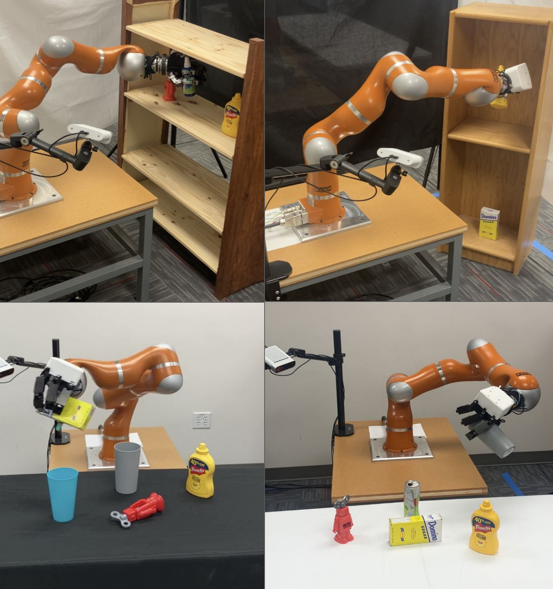
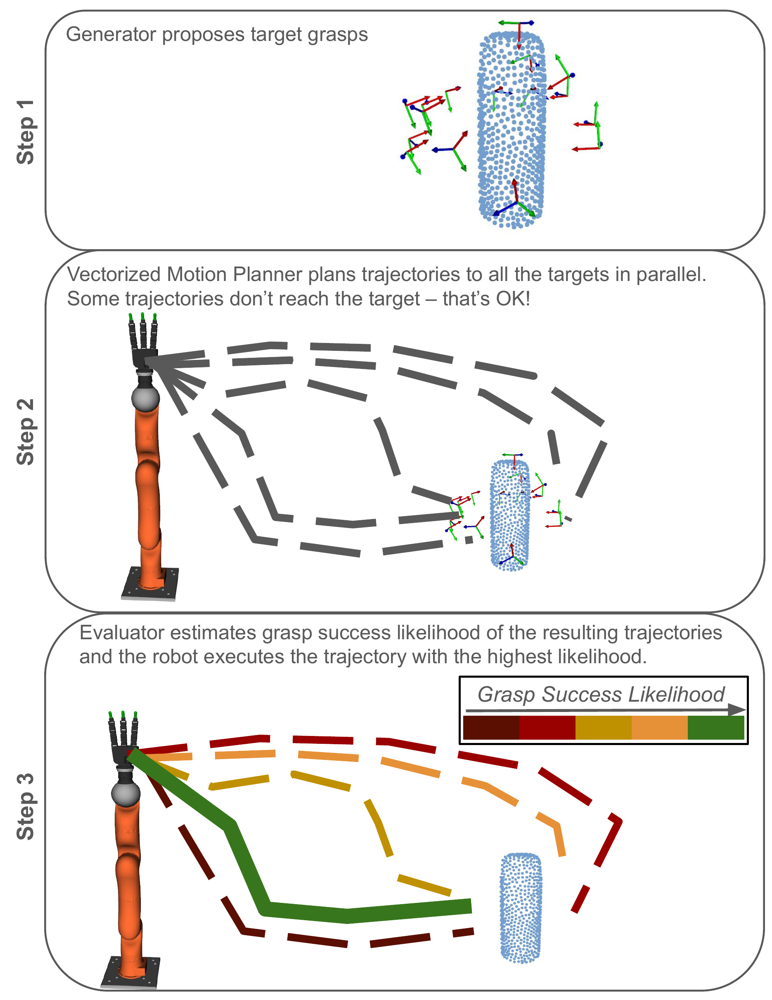
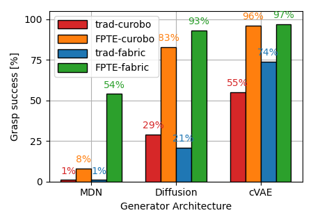
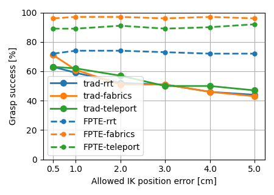
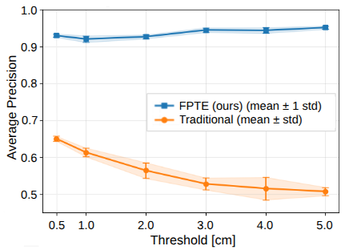
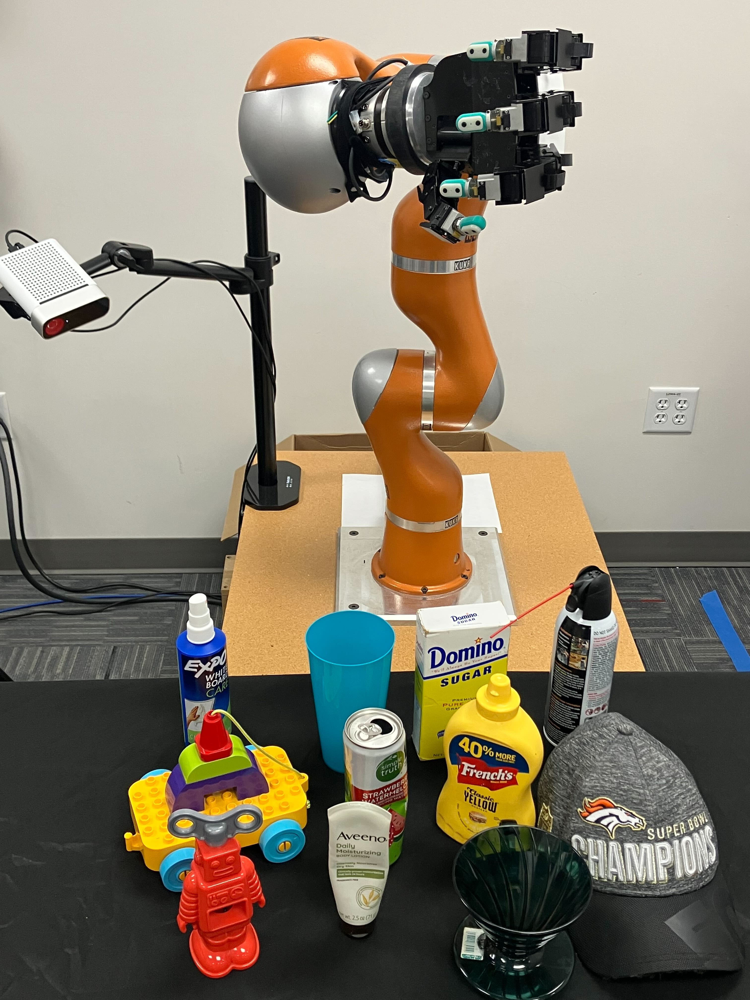
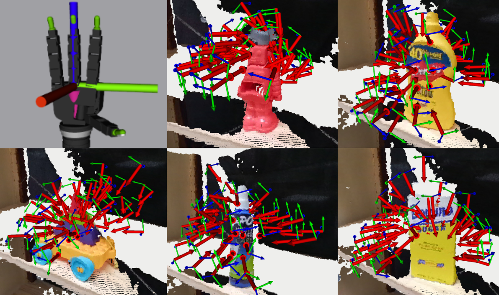
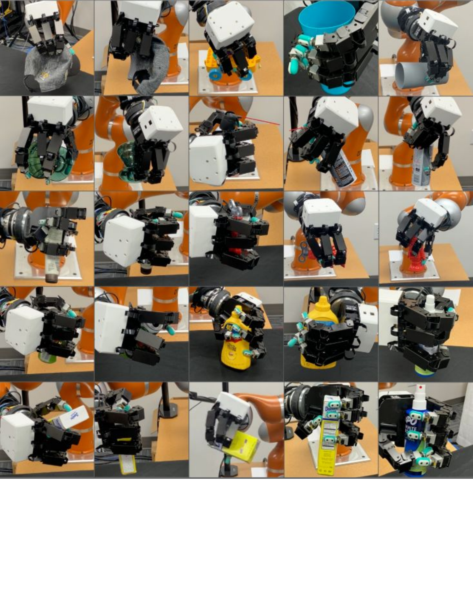
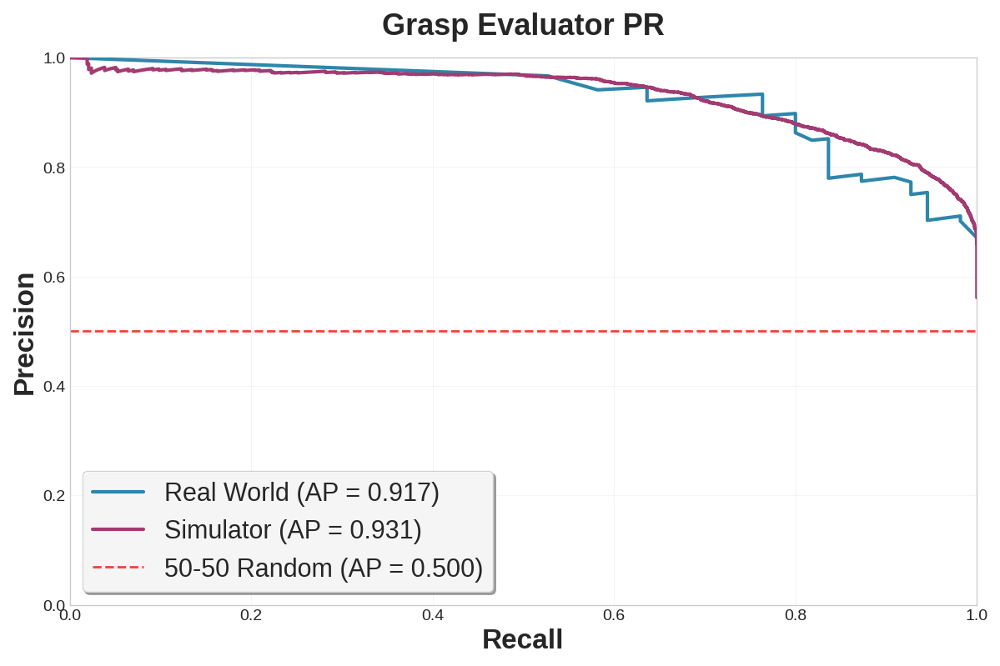
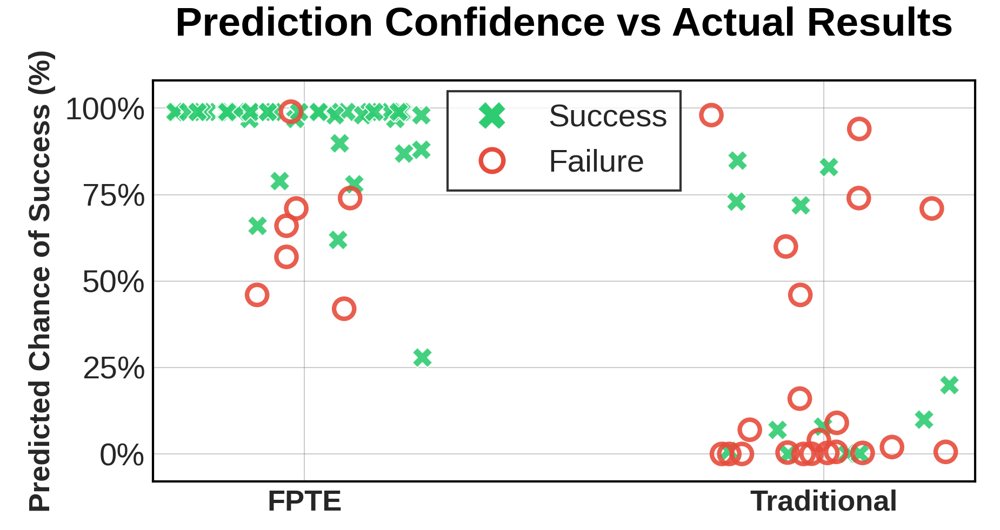

Learning-based dexterous grasping
First Plan Then Evaluate: Multi-Target Planning with Post-Planning Success Evaluation Improves Learning-Based Grasping Pipelines

Abstract
Plan to the candidates first, then score what the robot can actually execute.
Autonomous multi-finger grasping is a fundamental capability in robotic manipulation. Optimization-based approaches show strong performance, but tend to be sensitive to initialization and are potentially time-consuming. As an alternative, the generator-evaluator-planner framework has been proposed. A generator generates grasp candidates, an evaluator ranks the proposed grasps, and a motion planner plans a trajectory to the highest-ranked grasp. If the planner does not find a trajectory, a new trajectory optimization is started with the next-best grasp as the target and so on.
However, executing lower-ranked grasps means a lower chance of grasp success, and multiple trajectory optimizations are time-consuming. Alternatively, relaxing the threshold for motion planning accuracy allows for easier computation of a successful trajectory but implies lower accuracy in estimating grasp success likelihood. We propose a framework that plans trajectories to a set of generated grasp targets, estimates grasp success likelihood at the terminal configuration of the planned trajectories, and executes the trajectory most likely to succeed.
Experiments show that FPTE improves over the traditional generator-evaluator-planner framework across different objects, generators, and motion planners, and successfully generalizes to novel real-world environments, including different shelves and table heights.
Approach
FPTE changes where grasp likelihood is evaluated.
The traditional pipeline ranks grasp targets before planning. FPTE instead uses generated grasps as targets for the planner, keeps every executable collision-free trajectory, then evaluates the terminal robot configuration reached by each trajectory.
- Generate candidates A learned generator proposes a batch of object-frame grasps from a partial point cloud encoded with Basis Point Set features.
- Plan to all targets A vectorized motion planner computes trajectories to all candidates in parallel while avoiding the object and environment.
- Evaluate terminal grasps A learned evaluator scores the grasps resulting from the planned trajectories, and the robot executes the highest-scoring trajectory.

Results
Higher success across simulators, planners, generators, and real-world scenes.
In simulation, FPTE was evaluated with cuRobo and Fabrics planners, three generator architectures, 20 object shapes, and 100 table poses. The post-planning evaluator consistently improved grasp success over the traditional generate-evaluate-plan order.
In the real world, the system used a KUKA LBR4 arm with a 16 DoF Allegro hand. Across 11 novel objects and five table locations per object, FPTE reached an 80% success rate compared with 22% for the traditional pipeline.



Real-world generalization
Object-centric planning transfers beyond the training setup.
The learned models were trained on simulated single-object scenes from a fixed table height. At deployment, FPTE grasps novel objects, handles different table heights, and plans around shelves, clutter, and reconstructed object meshes.



Evaluator
Post-planning scoring produces higher-confidence successful grasps.
The evaluator is trained on simulated positive and negative samples, including hard negatives created by perturbing successful grasps. In deployment, it scores the actual robot configurations reached by planning, making the ranking aligned with executable grasps.

